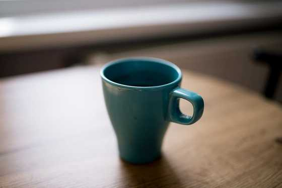
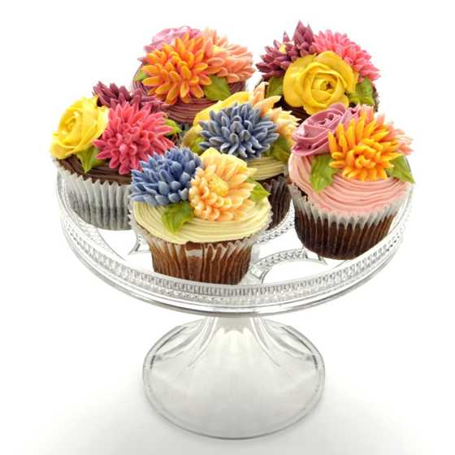
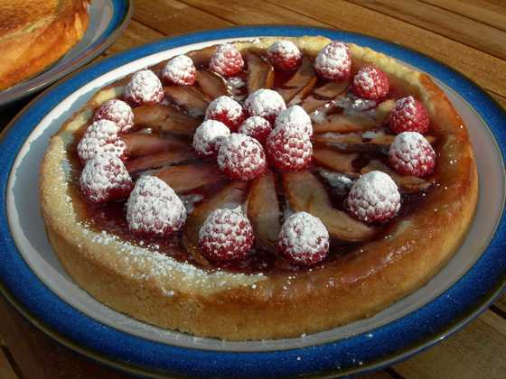
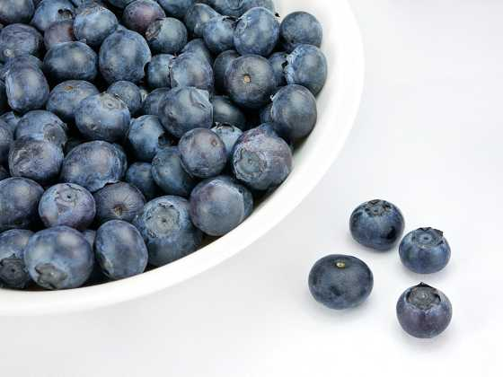
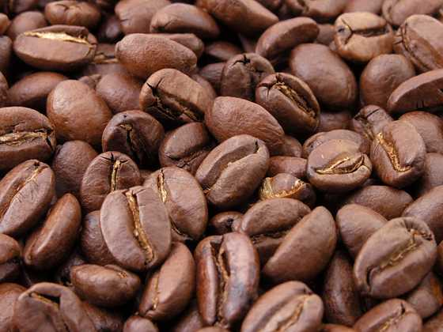

コミュニティカフェ / 福井県越前市村国
UMUcake and coffee
ここでの出会いから、新しいなにかが「生まれる」カフェ。
長く親しまれてきた町のケーキ店の味を受け継ぎ、人が自然と集まり、ゆるやかにつながれる場所として開かれたお店です。

お店の由来と想い
「生む」という名前に込めたもの
UMUは、ここでの出会いや会話をきっかけに、新しい取り組みやつながりが「生まれる」場所でありたいという願いから名づけられたと紹介されています。
前身は、越前市村国で30年以上親しまれたケーキ店「シャトーン」。その味を受け継ぎ、息子の金子武司さんが2025年12月、コミュニティカフェとして開きました。
- 過ごし方を決めない、のびやかな空間。小学生には児童館のように、高校生には図書館のように使ってほしいという想い
- 福井県産スギを使った内装(報道による)
- 自由に動かせるテーブル席、ステージにもなる小上がり、アイデアを書けるホワイトボード、ボードゲーム
- ワークショップや交流会などのスペース貸しにも対応(要相談)
上記は新聞・情報サイトの紹介記事に基づく内容です。写真はすべてイメージで、実際の店内ではありません。

メニュー
先代のケーキと、コーヒーと。
先代が作るケーキを販売しており、お持ち帰りもできます。コーヒーも楽しめます。下の写真は洋菓子のイメージで、お店の商品そのものではありません。









| ケーキ | 先代のケーキ(種類・価格は準備中) |
|---|---|
| ドリンク | コーヒーほか 詳細は準備中 |
| お持ち帰り | 可 |
| 価格 | 準備中 |
口コミ
こんな声が聞こえてきそうです
以下は制作側が作成したイメージ例で、実在のお客様の声ではありません。
イメージ例
ケーキを買って帰るつもりが、ゆったりした雰囲気につられて、つい席でコーヒーまで。
イメージ例
テーブルを動かして、友人たちと小さな集まりを開きました。使い方を決めないところが嬉しいです。
イメージ例
子どもがボードゲームに夢中になっている間に、ほっと一息つけました。